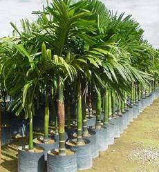
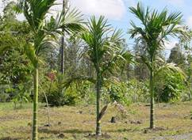
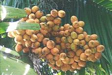
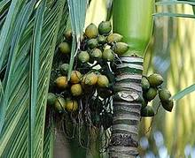
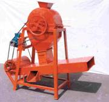
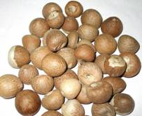

HORT 282 :: Lecture 15 :: ARECANUT

ARECANUT
(Areca catechu, Palmae)
Arecanut palm is cultivated primarily for its kernel obtained from the fruit which is chewed in its tender, ripe or processed form. Though it is native of Malayan Archipelago, Philippines and other East Indian Islands, Commercial cultivation is confined only in India, Bangladesh and Sri Lanka. India has about 2, 00,000 ha under this crop with an annual production of 2, 28, 600 tonnes. Kerala, Karnataka and Assam account for more than 90 per cent of the total area and production in our country.
Arecanut production in India has now almost reached a level of self sufficiency. Uses for arecanut other than chewing are negligible. Its export prospects are also very much limited. Therefore, the present policy is not to expand the area under arecanut, but to adopt intensive cultivation and take up replanting of the aged and unproductive gardens. Inter and mixed cropping in arecanut gardens is advocated to augment the income from the existing arecanut garden.
Botany
It is a monoecious palm and its inflorescence is a spadix produced in the leaf axil and is completely enclosed in a sealed boat shaped spathe. The spadix is having a main rachis divided subsequently into secondary and tertiary rachis. Female flowers are confined to tertiary and distal end of the secondary rachis, while male flowers are produced on filiform branches arising below and beyond the female flowers. Both female and male flowers are sessile, with two whorls of perianth. The fruit is a monolocular, one seeded berry and it consists of a fibrous outer husk, enclosing a single seed. It is a cross pollinated crop and fruit set normally varies form 12.0 to 40.0 percent and the time taken from full bloom to maturity of the fruit ranges from 35 to 47 weeks.
Climate and Soil
The arecanut palm is capable of growing under a variety of climatic and soil conditions. It grows well from almost sea level up to an altitude of 1000 metres in areas receiving abundant and well distributed rainfall or under irrigated conditions. It is grown in soils such as laterite, red loam and alluvial soils. The soil should be deep and well drained.
Varieties
There are few local varieties known by the name of the place where they are grown and are Thirthahalli, South Kanara, Mettupalayam, Mohitnagar. Regional Station, Vittal has released three improved cultivars, they are,
Mangala: An introduction from China early bearing, higher fruit set, higher yield, semi tall variety.
Subamangala: A selection from Indonesia, yield 17.5 kg of nuts/palm at the age of 10 years.
Sreemangala: A selection from Singapore yields 16.5 kg/palm at the 10th year.
SAS-1: Sirsi Arecanut Slection, resealed from UAS, Dharwad.
Raising of planting materials
Collection of seed nuts should be confined to high yielding palms which commence to bear early as well as those which give more than 50 % of fruit set. From these selected mother palms, fully ripe nuts are alone collected. All undersized and malformed nuts must be rejected. Heavier seed nuts within a bunch are alone selected, as they give higher percentage of germination and produce seedlings of better vigour than lighter ones.
 The selected seed nuts are sown immediately after harvest, 5cm apart in sand beds under partial shade with their stalk ends pointing upwards. Sand is spread over the nuts just to cover them. The beds may be watered daily. Germination commences in about 40 days after sowing and the sprouts can be transplanted to the second nursery when they are about three months old. At this stage the sprouts might have produced two to three leaves.
The secondary nursery beds of 150 cm width and of convenient length are prepared for transplanting the sprouts. The sprouts are transplanted at a spacing of 30X30 cm with the onset of monsoon. Partial shade to the seedlings can also be provided during summer by pandal or growing banana. Care should be taken to drain the nursery beds during the monsoon and to irrigate them during the dry months. Weeding and mulching should be done periodically. Seed nuts can also be sown in polythene bags (25 X 15 cm size ,150 gauge) after filling the bags with potting mixture containing 7 parts of loam or top soil, 3 parts of dried and powdered farm yard manure and 2 parts of sand.
The seedlings will be ready for transplanting to the main field when they are 12 to 18 months old. Seedlings having 5 or more number of leaves selected. The height of seedlings at the time of planting has a negative correlation with the subsequent yield of the plant. Hence shorter seedlings with maximum number of leaves are removed with a ball of earth for transplanting. If the seedlings are raised in polythene bags, these can be straightway transported to any distance without much damage.
Planting
The planting is done during May- June with the onset of monsoon. Arecanut palms need adequate protection from exposure to the South Western sun as they are susceptible to sun-scorch. Proper alignment of the palms in the plantation will minimize sun scorching of the stem. In the square system of planting at a spacing of 2.7m X 2.7m, the North South line should be deflected at an angle of 35 degree towards went. The outermost row of plants on the southern and south-western sides can be protected by covering the exposed stem with areca leaves or leaf sheaths or by growing tall and quick growing shade trees.
Pits of 90 X 90 X 90cm are dug and the pits are filled with a mixture of top soil, powdered cow dung and sand to a height of 50 to 60 cm from the bottom. The seedlings are planted in the centre of the pit, covered with soil to the collar level and pressed around. A shade of banana can be raised to give protection to the seedlings from sun scorch.
Manuring
Adequate supplies of plant nutrients in the soil throughout the life of the crop are essential to get high yield. Hence, an annual application of 100: 40: 140 g of NPK per tree in the form of fertilizers and 12 kg each of green leaf and compost or cattle manure per bearing palm is recommended. Under rainfed conditions, half the quantity of fertilizers may be applied in April- May and the remaining quantity in Sep- Oct. Under irrigated condition, the first dose of fertilizer is applied only in Feb. Green leaf and compost can be applied in single dose in Sep- Oct. Irrespective of the age of the plants, full dose of green leaf and compost or cattle manure may be applied from the first year of planting itself while one-third of the recommended quantity of fertilizers in the first year, two-third in the second year and the full dose from the third year onwards. The first dose of fertilizers may be broadcast around the base of each plant after weeding and mixed with the soil by light forking, while the second dose is done in basins around the palm dug to a depth of 15 to 20 cm and at 0.75 to 1m radius. In acidic soils, required quantity of the lime may be applied during the dry months and forked in.
Irrigation and drainage
The palms should be irrigated once in four to seven days depending on the soil type and climatic factors. In Kerala, arecanut gardens are irrigated during dry months once in seven or eight days during November-December., once in six days during March, April and May. Adequate drainage should be provided during monsoon since the palms are unable to withstand water logging. Drainage channels should be 25 to 30 cm deeper than the bottom of the pits to drain excess water from the plot.
Other operations
A light digging may be required when the monsoon ends to break up any crust formed at the soil surface and also to uproot weeds. Weeding should be done periodically to keep the garden clean.
Cover cropping
Cover crops, such as Mimosa invisia, Stylosanthes gracillis and Calapogonium muconoides have been found to be suitable for arecanut gardens. The cover crops may be sown in the month of April-May and the green matter may be cut and applied to arecanut palms at the time of second dose of fertilizer application.
The crops which can be grown successfully in arecanut gardens without loss of arecanut yields are banana, cocoa, pepper, pineapple, betel vine; elephant foot yam, tapioca, dioscorea, sweet potato, arrow root, ginger, turmeric and guinea grass. Nutmeg and clove can be also grown in between four palms on alternate rows.
Harvesting and processing
The stage of harvesting depends on the type of produce to be prepared for the market.
1. Dried ripe nuts/Chali/Kottapak
The most popular trade type of arecanut is the dried, whole nut known as chali or kottapak. Fully ripe, nine months old fruits having yellow to orange red colour is the best suited for the above purpose. Ripe fruits are dried in the sun for 35 to 40 days on dry leveled ground. For drying and dehusking, sometimes fruits are cut longitudinally into halves and sun dried for about 10 days, then the kernels is scooped out and given a final drying.
2. Kalipak
Another form of processing is by making kalipak. The nuts of 6 to 7 months maturity with dark green colour are dehusked, cut into pieces and boiled with water of dilute extract from previous boiling; a kalli coating is given and dried finally. Kali is the concentrated extract obtained from boiling 3 to 4 batches of Kalipak.
3. Scented suparis
There are many varieties of scented suparis. Dried arecanuts broken into bits, blended with flavour mixture and packed. Formerly the bits were roasted in ghee or oil, but it is almost fully given up nowadays, owing to development of rancidity. The flavouring of supari varies with region and is a closely guarded secret.
In South India scented supari is made from kalipak like batlu Spices and synthetic flavours are added. Instead of raw spices, nowadays, essential oils are used for easy blending. Rose essence as well as menthol is very common. Coconut gratings are not added nowadays to check microbial growth. These are usually packed in butter paper.
Scented suparis popular in north and central India are of two types; the one made from chali and the often from kalipak. The former is more popular. At times, saccharin is used for sweetening. Additives like colour and flavour are added. Plastic strips are used for convenient packing. Tin and aluminum pouches are used for bulk packing of scented supari.
Post harvest technology
Dehusking of arecanut is traditionally done by skilled manual labour with the help of a tool, which has a sickle shaped small pointed blade fixed on a plant. A simple device for dehusking arecanut, developed by CPCRI, Kasargod can also be used. The main advantage of this device is that any unskilled person can operate it. The optimum is about 60 kg husked nuts in case of dried nuts and 30 kg in case of green nuts if one person operates the device for a day of 8 hours.
In view of the declining use of arecanut as masticatory, alternate and better uses of arecanut and the other produces like spathe, husk are now thought of.
Yield
More than 10 kg of ripe nuts per palm at the 10th year is considered as normal yield in any plantation.
Pest management
Mites (Raoiella indica, Oligonychus indicus)
Adults and young ones suck the lower surfaces of the leaves, causing them to turn yellow and bronzed appearance. The mites can be controlled by spraying with dimethoate or Dicofol at 0.05 per cent.
Spindle bug (Carvalhoia arecae)
The feeding injury is caused on the lamina and petiole. The affected leaves show dry brown patches.
Spray crowns with carbaryl 50 WP. The spray should reach the leaf axils. Repeat spraying after 30-35 days if pest incidence continues. Placement of 2 g phorate 10G sachets on the top most two leaf axils prevents the pest attack.
Inflorescence caterpillar (Tirathaba mundella)
Caterpillar feed on the flowers and clamp the inflorescence into a wet mass of frass with silky threads.
Force open the inflorescence out of the enclosing spathe and spray Malathion 50 EC (250 ml in 100 litres of water). Control slugs, which predispose inflorescence to the attack of caterpillar, by using bait of Metaldehyde.
Root grub (Leucopholis burmeisteri)
Loosen soil around the base of palms to a depth of 10-15 cm and drench with Chlorpyrifos 0.04% suspension twice, one in May just before the onset of southwest monsoon and again in September-October towards the close of the monsoon. Repeat application for 2 or 3 years consecutively to secure a complete eradication of the pest. Root grubs can also be controlled by soil application of phorate 10G around the palms.
Disease Management
Koleroga (Mahali or fruit rot) (Phytophthora arecae)
Water soaked lesions appearing on the nut surface near the perianth and spread over the other parts. Infected nuts shed without perianth.
Spray Bordeaux mixture 1% on all bunches three times in a year, one just before the onset of southwest monsoon and the rest at 40 days intervals. If monsoon season is prolonged give a third spray. Use rosin soda adhesive to ensure tenacity of the spray deposit on treated substrate. Remove and burn all fallen and infected nuts.
Bud rot (Phytophthora palmivora)
Affected spindle appear yellow, later changing to brown and finally the whole spindle rots. Remove and destroy affected spindle and leaves. In early stages of infection, scoop out affected rotten tissues by making longitudinal side splits and apply Bordeaux paste on the exposed healthy tissues or drench crown with 1% Bordeaux mixture.
Basal stem rot (Anabe roga) (Ganoderma lucidum)
Small brown irregular patches appear on the stem and a brownish exudates oozes out from these patches.
Control
1. Isolate affected palms by digging trenches 60 cm deep and 30 cm wide around, one metre away from the base and drench with Captan (0.3%), Calixin (0.1%) or Copper oxychloride (0.3%)
2. Remove and destroy all severely affected palms and stumps of dead palms.
3. Drench the soil with 1% Bordeaux mixture before planting healthy seedlings.
4. Discourage growing of collateral hosts of fungus such as Delonix regia and Pongamia glabra in the vicinity of gardens.
5. Apply 2 kg neem cake per palm.
6. Avoid flood irrigation and water flowing from infected palms to healthy palms.
Yellow leaf disease
Leaves become yellow, smaller, stiff and pointed, crown gets reduced, and palm remains stunted with few or no nuts.
Maintain the garden properly to keep affected palms in a healthy condition by adopting recommended manurial, cultural, plant protection and other management practices. Improve drainage conditions in the garden.
Band disease
Improve soil conditions by loosening hard soil strata, if present, by providing good drainage. Adopt adequate control measures against spindle bug, mealy bugs, scales and mites. Where the results of the above treatments are not found satisfactory, apply powdered mixture of copper sulphate and lime in equal quantities @ 225 g/palm twice a year at the base of affected palms. Application of borax @ 25 g/palm has been found to have an ameliorative effect.
Collar rot of seedlings
Improve drainage conditions in nursery beds and gardens. Drench spindle and base of seedlings with 1% Bordeaux mixture in disease affected nursery or garden.
Dieback of inflorescence
Remove affected inflorescence immediately. Spray Zineb (4 g in 1 litre of water) or Mancozeb (3 g/l) twice, once just after female flowers are set and again 15-28 days later. Aureofungin sol at 50 ppm concentration is also effective in controlling the disease.
Stem bleeding
Palms in the age group of 10-15 years are more prone to this disease. Symptoms appear on the basal portion of the stem as small discoloured depression. Later, these spots coalesce and cracks develop on the stem leading to disintegration of the fibrous tissues inside. With the progress of the disease a brown exudates oozes out from these cracks. High water table predisposes the palm to this disease.
Improvement of drainage and root feeding of 125 ml Tridemorph (1.5%) is suggested as control measure against this disease.
Sun scorch
Protect palms from southwest sun by wrapping stems with areca sheath or white-wash the exposed portion. Provide reinforcement to palms showing stem fissures. Grow tall, quick growing trees on southern and western sides of garden.
Nut splitting
This can be considered as a physiological disorder than a disease. Palms in the age group of 10-25 years are more susceptible. Symptoms are premature yellowing of the nuts when they are half to three-fourth mature. Later splits develop at the tips, which extend longitudinally exposing the kernel. Sometimes kernels also show splitting and malformation. Rarely the kernel inside may exhibit splitting without visual symptoms on the husk, resulting in nut fall. Hyper nutrition or sudden flush of water after a period of drought or insufficient moisture in the soil is the probable cause (s) of the disease.
Improvement of drainage in ill drained gardens and spraying of borax @ 2 g/litre of water are found effective in reducing the disease incidence.
- Scientific name of arecanut?
- List out the important varieties of arecanut?
- What are the important cover crops, suitable for arecanut gardens
- List out the value added products in coconut?
- Important pest & diseases in arecanut?
| Download this lecture as PDF here |